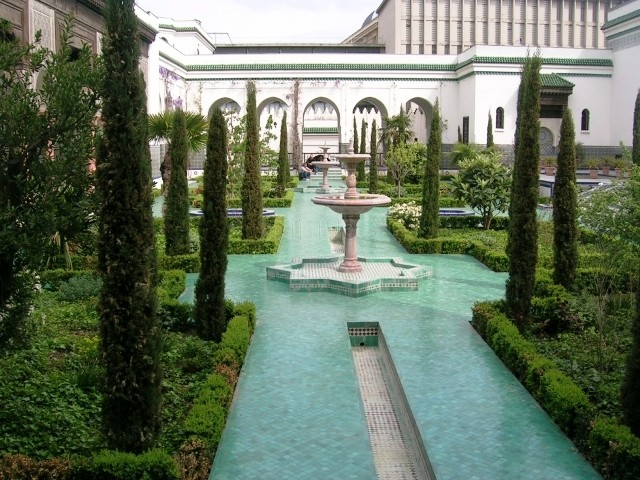
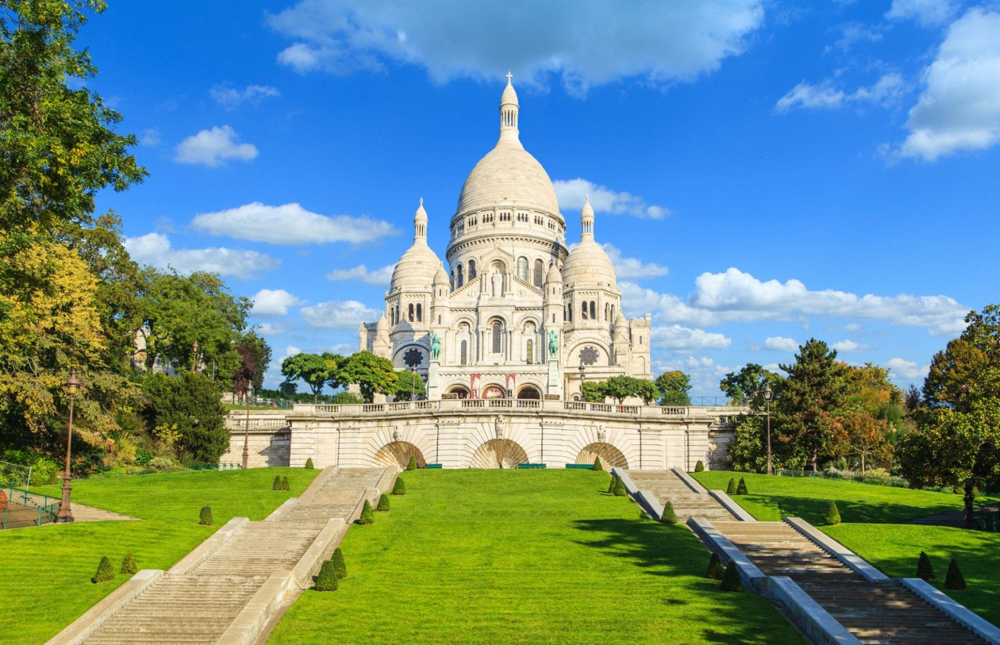
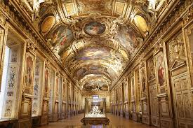

Luoghi storici
Chiese e luoghi di culto Parigi, mosaico di cultura e storia, custodisce innumerevoli luoghi di culto. Parti dalla Cattedrale di Notre-Dame, capolavoro gotico, le cui guglie e vetrate maestose rimangono simbolo di fede e ingegno umano, nonostante l'incendio del 2019. Su Montmartre, la Basilica del Sacro Cuore risplende al sole e offre un panorama mozzafiato. Infine, nel Quartiere Latino, la Grande Moschea di Parigi, con il suo minareto alto 33 metri, il lussureggiante giardino e il salone da tè, è un'oasi di pace in mezzo alla frenesia cittadina. Musei e cultura Parigi, custode di inestimabili tesori culturali, vanta musei e monumenti eccezionali. Iniziamo dal Louvre, antico palazzo reale, che ospita un’incredibile collezione di opere d'arte famosissime, tra cui la Monna Lisa e la Venere di Milo. Dal lato opposto della Senna, il Museo d'Orsay, ex stazione ferroviaria, espone capolavori impressionisti e post-impressionisti, da Monet a Van Gogh, da Renoir a Cézanne. La Tour Eiffel, pur non essendo un museo, simbolizza la cultura e l'innovazione parigina, dominando con la sua struttura in ferro battuto il paesaggio urbano e incarnando lo spirito audace della città.
  I teatri di Parigi La scena teatrale parigina è affascinante e diversificata, e ospita alcuni palcoscenici tra i più famosi al mondo. Non si può che iniziare dalla celebre Opéra national de Paris, o Palais Garnier, un capolavoro del XIX secolo e vero e proprio tempio dell’arte più classica. L'Opéra Bastille, con la sua forma geometrica e facciata di vetro, rappresenta al contrario la modernità e l'innovazione. La Comédie Française, fondata nel 1680, è l'icona della drammaturgia francese e la più antica compagnia teatrale attiva al mondo. Questo teatro ha visto esibirsi alcuni dei più grandi talenti della scena francese.